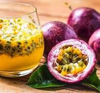
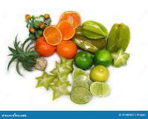

Fruits are delicious and healthy foods that are enjoyed by people all over the world.
Fruits come in different colours, shapes, sizes and tastes
Some fruits are sweet, while others are sour or slightly bitter.

Apple is a popular fruit that can be red, green or yellow.
Apples can be eaten fresh or used to make juice and other foods.

Banana its a popular fruit and food.
Bananas can be eaten as a fruit or can be cooked as a food as well.

Pineapple is a sweet tropical fruit that grows on a low-to-the-ground herbaceous plant.
Pineapple contains nutrients and beneficial compounds, such as vitamin C, manganese, and enzymes.
Tropical fruits grow well in warm areas and are popular in many countries.

Sour fruits are natural plant foods that contain high level of organic acid like citric, malic, and oxalic acid, giving them a sharp, mouth-puckering taste.

Sweet - Fruits with a naturally sugar taste.
Sour - Fruits with a sharp or acidic taste.
Tropical - Fruits that commonly grow in warm regions.
Juicy - Fruits that contain a lot of luquid.